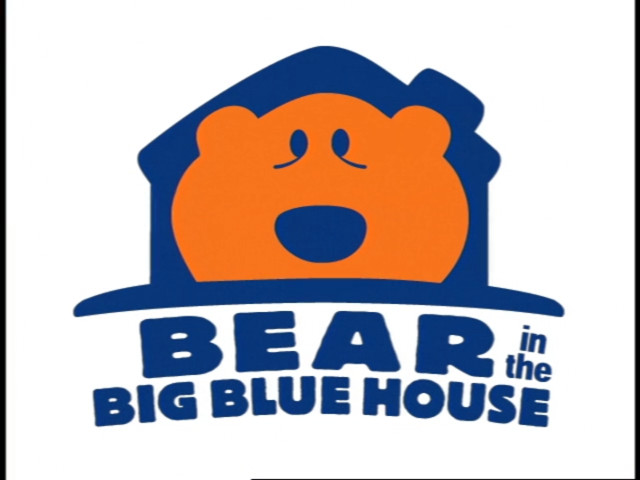

Miś z Błękitnego domu
(Polish, TVP1)

Title:
Miś z Błękitnego domu
Aired on:
TVP1 (formerly)
Dubbing Studio:
Telewizyjne Studia Dźwięku
DUBDB Article
WATCH
Season 1
(1 full episode, 2 partial episodes)
archive.org